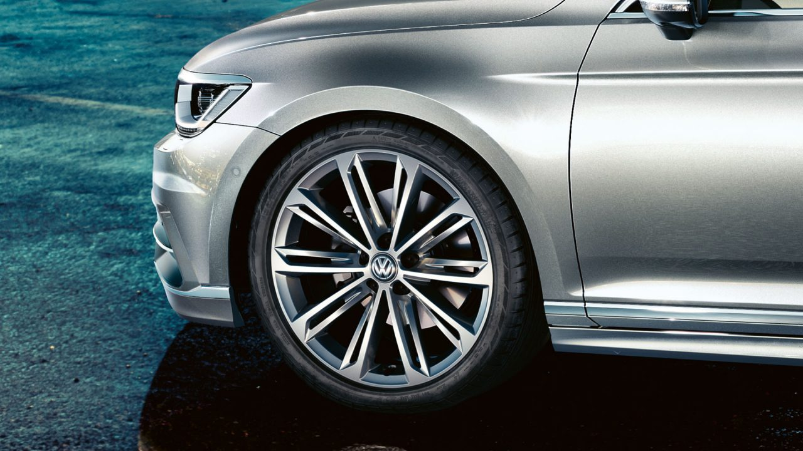

Газета "Неделька" |
|  |
Ассортимент дисков
Вам есть из чего выбирать: ассортимент дисков для Volkswagen Passat
Вы решаете, какие диски лучше всего подойдут Вашему Volkswagen Passat.
Придайте ему дополнительную индивидуальность в соответствии с собственными
предпочтениями. Широкий ассортимент спортивных и элегантных дисков позволит
подчеркнуть привлекательную внешность Вашего Volkswagen Passat. |
И расстались два Валерия.
На своей первой после выборов пресс-конференции избранный губернатор Валерий Радаев сообщил о том, что глава администрации Саратова Валерий Сараев подал в отставку: «В плане организации выборного процесса были вопросы...
читать далее.
Свергнуть Путина можно только одним путем.
Заместитель генерального директора крымско-татарского телеканала АТР, журналист Айдер Муджабаев в первой части интервью «Апострофу» рассказал, чего ожидать от Владимира Путина в следующие шесть лет его правления, что может заставить президента России...
читать далее.
Коммунизм спасет нас...
Народный артист России Юрий НАЗАРОВ в беседе с политическим обозревателем "Правды" Виктором КОЖЕМЯКО.
Он не только талантливый актер, сыгравший в кино более двухсот ролей. Он также человек беспокойной, ищущей мысли. Сколько знаю его...
читать далее.
© 2018 <<Газета Неделька>> Production.